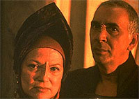
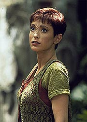
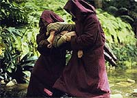
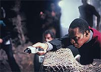
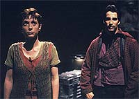

MANCHETE
DO EPISDIO
Segundo
ato fornece respostas, no
melhor episdio da trilogia Bajoriana
Episdio
anterior | Prximo
episdio
Sinopse:
Data Estelar:
desconhecida.
Sisko e Jaro conversam no escritrio do comandante de Deep Space
Nine. Sisko no est feliz pela transferncia de Kira para
Bajor sem ningum consult-lo a respeito. Jaro diz que a
transferncia uma espcie de promoo dada a Kira pelo
resgate de Li Nalas, Sisko fica mais tranqilo mas ainda um tanto
desconfiado. Ele pergunta a Jaro por que no manter Li Nalas na
Capital Bajoriana para fortalecer a posio do governo provisrio.
Jaro diz que no seguro para Li em Bajor agora e que Sisko no
poderia ter um melhor oficial de ligao que Li Nalas, o maior
heri da histria bajoriana. Jaro parte para Bajor.
Jake chama Sisko pelo comunicador e pede que ele o encontre na
porta dos aposentos deles. Chegando l, Sisko vislumbra o emblema
do "Crculo" em sua prpria porta.
Odo entra no quarto de Kira e fica transtornado por encontr-la
fazendo as malas para partir, aparentemente resignada com a
transferncia. Kira, percebendo o quo genuinamente Odo est
perturbado com isto tudo, diz: "- Eu tambm sentirei muito a
sua falta, Odo".
O momento interrompido por Dax que vm devolver um pote de
creme que ela tomou emprestado. Ento chega Bashir que veio
desejar sorte. Depois adentra O'Brien que diz que foi uma prazer
servir com Kira. Logo depois chega Quark com uma garrafa de
"syntahale" para comemorar a partida da Major. O quarto
fica cada vez mais e mais barulhento at que finalmente a porta
toca mais uma vez e desta vez Vedek Bareil que adentra os
aposentos de Kira. Bareil diz que ele no queria perturbar.
- No, por favor, entre. Estes so meus ... estes so meus
amigos.
[Kira, olhando em volta nos seus aposentos, descobrindo, talvez
pela primeira vez, o quanto estas pessoas passaram a significar
pra ela.]
Bareil no anunciou sua vinda a DS9, pensando que assim seria
melhor devido a crescente violncia em Bajor. Ele convida Kira a
passar alguns dias em seu Monastrio. "- Costuma ajudar
quando o esprito fica um pouco ferido" , diz ele. Kira
aceita.
Kira vai fazer sua ltima visita ao OPS (Centro de Operaes de
DS9). Li Nalas, seu substituto, se junta a ela e logo depois
Sisko. Li diz que sente muito e diz que no queria este posto,
Kira diz que a principio tambm no queria mas mudou de idia
com o tempo. Sisko diz a Kira que NINGUM poderia substitui-la e
que vai fazer de tudo para t-la de volta. Kira pede permisso
para desembarcar e vai embora de DS9.
Algum tempo depois, j no jardim do Monastrio de Bareil em
Bajor, Kira diz a Bareil que no tm nenhum dom para as Artes.
Bareil ento a leva para uma cmara interna do Monastrio onde
fica guardada uma arca com um Orb(o "Terceiro Orb", o
"Orb de Profecia e Mudana") em seu interior. Bareil
abre a arca e deixa Kira sozinha.

Envolta
em luz, logo ela se v na cmara dos Ministros, com os
legisladores gritando, mas ela no pode ouvi-los. Ento Dax, em
uma roupa de Vedek, a abraa, mas quando ela se afasta ela se
transforma em Vedek Winn. Kira recua e esbarra com as costas no
Ministro Jaro, que diz que as vozes clamam por ele. Mas Bareil
aparece e diz que as vozes clamam por ela. Finalmente ela se v
despida e pede que Bareil a ajuda a escutar as vozes. Tambm
despido, ele a abraa e a beija, ento ela pode escutar. Fim da
viso.
Quark vai at o escritrio de Odo e diz saber que os
Kressarianos esto fornecendo armas para o "Crculo",
suficientes para montar um Exrcito. Odo fica intrigado pois os
Kressarianos nem ao menos tm foras militares. Odo pergunta a
Quark como ele obteve esta informao e ele diz no poder
revelar as suas fontes. Odo, enquanto aguarda o computador lhe
dizer quando chegar a prxima nave Kressariana, nomeia Quark um
oficial de segurana e lhe d uma ordem de descobrir para onde
as armas esto indo em Bajor. Frente aos protestos de Quark, Odo
diz que ele faz isto ou ele o prende por obstruir uma investigao.
Quark acaba concordando.
Ao receber as novidades, Sisko decide ir a Bajor e pede que Li
Nalas use suas ligaes junto aos militares para descobrir
quanto suporte o governo provisrio possui.
Kira se encontra com Bareil no jardim claramente no querendo
falar sobre sua experincia com o Orb. Bareil diz que a sua ltima
experincia com o Orb envolveu Kira e por isto que ele a convidou
para vir ao Monastrio. Eles escutam artilharia pesada a distncia.
Ento Winn fala com eles de cima de uma ponte quase acima de suas
cabeas. Mais traioeira, doce e sutil do que nunca, Winn ataca
Bareil por ele ter permitido a Kira o acesso ao Orb sem prvia
consulta a Assemblia dos Vedeks.

Sisko
visita o general Krim, um lder militar que ele encontrou no ano
passado, e que est comandando a defesa da capital. Sisko comenta
que aparentemente toda vez que existe a possibilidade de um
confronto direto entre os militares e as foras do "Crculo",
os militares batem em retirada. Sisko diz tambm que o governo
provisrio necessita do apoio dos militares. Krim pede a simpatia
de Sisko para este conflito em que "Bajoriano luta com
Bajoriano". O general parece surpreso quanto ao envolvimento
dos Kressarianos como fornecedores de armas para o "Crculo".
Sisko promete que assim que descobrir onde so guardadas tais
armas, Krim ser o primeiro a saber. Sisko fala tambm sobre a
possibilidade de ter a Major Kira de volta a DS9, sob o que Krim
diz no ter autoridade alguma. Mas Krim faz questo de dizer que
ele no esquecer o fato de que Sisko no tentou trocar a
informao sobre os Kressarianos por um favor a respeito do caso
Kira.
No OPS, Li e Dax esto retardando ao mximo a partida do
cargueiro Kressariano para que O'Brien e Odo possam fazer uma
"inspeo" em sua carga. Finalmente O'Brien deposita
um container no hangar do cargueiro e autoriza a partida. Logo em
seguida uma parte da lateral deste container desliza e se
transforma em um rato.
Sisko visita Kira no Monastrio e diz que ainda no desistiu de
traz-la de volta, e de que o "Crculo" est armado
para um golpe de estado iminente. Sisko no tm certeza se os
militares vo apoiar o governo provisrio. Assim que ele parte,
Kira atacada por um grupo extremamente similar ao que atacou
Quark anteriormente. Eles aplicam algum tipo de droga, e a levam
embora.
No hangar de carga da nave Kressariana, Odo (como rato) assiste
quando um gul Cardassiano se transporta a bordo com vrias
caixas. O capito do cargueiro inspeciona o armamento e recebe em
um PADD a impresso digital do polegar do Cardassiano, que logo
depois se teleporta da nave.
Kira recobra os sentido em uma construo subterrnea, usada
como quartel general do "Crculo", onde ela fica
surpresa por ver o Ministro Jaro dando ordens. Jaro no tem mais
nada a esconder: "- Eu sou o 'Crculo', Major". Kira
finalmente entende por que Li Nalas foi transferido para DS9. A
sua presena na Capital seria uma ameaa ao Golpe planejado por
Jaro. Kira pergunta como Jaro pode se voltar contra o seu prprio
governo.
- Eu no permitirei que os Bajorianos sejam fracos novamente ...
ns trouxemos arte e arquitetura a incontveis mundos. Ns no
merecemos ser vtimas.
[Ministro Jaro]
Jaro pergunta a Kira o que Sisko far quando tiver certeza do
golpe. Frente a frontal recusa de Kira em responder, Jaro informa
a Kira de que o "Crculo" aprendeu algumas coisas com
os Cardassianos, "- como saber encorajar as pessoas a falar,
por exemplo".
A tripulao de DS9 est discutindo a abduo de Kira e Li
oferece o seu nome para tentar conseguir alguma cooperao.
Quark adentra o OPS e, para espanto geral, diz ter descoberto o
local do quartel general do "Crculo". Sisko monta uma
equipe de resgate. Li pede para ir pois, entre outras coisas, deve
muito a Kira, Sisko concorda.

Eles
se materializam nas cavernas, e Sisko distribui comunicadores
extras para todos; quem pegar Kira primeiro deve prender o
comunicador nela e chamar pelo teletransporte. O tiroteio comea
e Bashir acaban encontrando Kira primeiro, toda machucada e ensangentada.
Bashir vai a nocaute mas Kira pega o comunicador e o grupo de
resgate se desmaterializa.
Kira tratada na enfermaria, onde ela diz que Li Nalas o nico
que pode parar Jaro. Mas ele nunca chegaria vivo at a cmara de
Ministros. "- Cortesia de uma arma cardassiana", anuncia
Odo, chegando com um PADD contendo uma prova definitiva, um
manifesto de carga com a impresso do polegar de um gul
Cardassiano. O "Crculo" no sabe da real fonte do seu
armamento. Os motivos Cardassianos so simples, quando a Federao
partir, devido ao iminente golpe, eles vo voltar e tomar o
controle do sistema Bajoriano.
Sisko pede que Dax abra um canal para Bajor por que Li Nalas
deseja se pronunciar perante a cmara de Ministros pelo subespao.
Mas todas as comunicaes com Bajor esto sendo bloqueadas. O
golpe j est em andamento. Sisko pede que Dax contate o
almirante Chekote no Comando da Frota Estelar.
Enquanto isto no altar de um templo Bajoriano, Jaro pede a Winn o
seu apoio pblico. Winn diz que a sua voz pouco ouvida na
assemblia dos Vedeks. Jaro diz que isto vai mudar quando ele, o
prximo lder Bajoriano, entrar na ordem dela e promete que far
tudo em seu poder para v-la se tornar a prxima Kai. Winn sorri
e diz que "os Profetas esto sorrindo para voc hoje,
Ministro".
O'Brien diz que duas naves de assalto Bajorianas esto vindo para
DS9, dando ordem de que todo o pessoal no-Bajoriano deve deixar
a estao em sete horas. Sisko coloca o almirante Chekote a par
de toda a sombria situao. Entretanto o almirante, mesmo com o
envolvimento Cardassiano, considera o iminente golpe um assunto
interno Bajoriano e aplica a Primeira Diretriz. Ele ordena a Sisko
que evacue DS9.
Voltando ao OPS, sua mente funcionando a toda, Sisko pergunta a
O'Brien quando demoraria uma TOTAL evacuao de pessoal e
propriedade da Federao. O'Brien diz que levaria vrios dias,
e as naves de assalto chegaro em menos de sete horas.
"Ento eu acho que alguns de ns ainda no tero
terminado de fazer as malas quando eles chegarem aqui", diz
Sisko
Continua ...
Comentrios:
Existe uma espcie de dito popular que postula que em toda
trilogia, seja ela em qualquer arte, o segundo ato sempre o seu
melhor momento. Esta trilogia est de acordo com tal regra.
So apresentadas respostas para o porqu da transferncia de Li
Nalas a DS9 e de Kira de volta a Bajor, bem como so posicionados
os dois principais candidatos sucesso de Kai Opaka: Bareil e
Winn. Chega sem surpresas a verdade de que Jaro est por trs do
"Crculo" e tambm sem surpresa a confirmao do
envolvimento Cardassiano. Mas o que
funciona realmente de forma maravilhosa que este grupo xenfobo
radical, o "Crculo", est sendo armado pelos
Cardassianos (o seu pior inimigo) sem o conhecimento de tal grupo.
impressionante como foi conseguido empacotar tanta coisa em uma
nica hora de televiso. Vejamos, Kira recebe um BOCADO de
desenvolvimento, entendendo sua relao com a tripulao
(especialmente Sisko), tendo sua primeira experincia com um Orb
e o vislumbre de um possvel relacionamento afetivo com Bareil.
Temos tambm a re-introduo de Bareil e Winn, a apresentao
de inmeros elementos de trama que confirmam o perigo que o
"Crculo" representa, a confirmao do envolvimento
de Jaro com o "Crculo", a confirmao do
envolvimento Cardassiano no suprimento de armas, a
"valsa" de Winn e Jaro e o incio de conflitos
militares em Bajor com a iminente entrada das foras do "Crculo"
na capital Bajoriana, conflitos estes que nunca so mostrados,
mas servem para dar um senso de urgncia trama, que culmina
com a ordem de evacuao de DS9.

Ao
contrrio do que se pode imaginar, o passo de episdio lento,
com cenas longas e bem estruturadas, mas o iminente golpe de
Estado serve como uma espcie de bomba-relgio que explode ao
final do episdio. Eventos realsticos que se baseiam de forma
consistente em elementos j estabelecidos durante a srie
parecem levar os personagens (e o espectador) em uma enxurrada
fora do controle deles. Bravo!
A direo de Corey Allen excepcional, mantendo um passo
tipicamente cinematogrfico, mas com uma fotografia talvez ainda
mais inventiva do que a de Winrich Kolbe em "The
Homecoming" (basta conferir QUALQUER cena em que algum
entra ou sai do elevador).
timas atuaes de Langella (em especial), Beymer, Anglim e
Fletcher. O elenco regular est muito bem tambm, mas o destaque
vai de novo para Nana Visitor.
A cena "da despedida", logo no comeo do primeiro ato,
com toda a tripulao indo para se despedir de Kira em seus
aposentos, maravilhosa. lindo como ela descobre o quanto
aquelas pessoas passaram a significar pra ela ao longo do ltimo
ano.
A ltima visita de Kira ao OPS (com uma fotografia totalmente no-usual),
a entrada de Li Nalas em cena e depois Sisko, bela direo. A
fala de Sisko de que ningum poderia substituir Kira soa
infinitamente verdadeira e mostra que algo se solidificou entre
ela e Sisko ao longo do tempo, aliado ao fato de ela dizer a Li
que no queria este posto no incio, mas isto mudou.
A viso de Kira brilhantemente executada, oferecendo talvez a
mais madura utilizao de sexualidade at aquele momento em Jornada
nas Estrelas. Tal viso oferece elementos que sero
utilizados no prximo episdio e ao longo da temporada.
A cena entre Odo e Quark, onde Odo termina por recrutar Quark como
oficial de segurana maravilhosa. O que funciona muito bem
que Quark que descobre que os Kressarianos esto armando o
"Crculo" e, ao final, o local do quartel-general do prprio
"Crculo".
(Funciona to bem quanto a descoberta do brinco de Li Nalas, por
parte do prprio Quark, em "The
Homecoming". Parece realmente o tipo de coisa que
Quark pode obter atravs de canais "no-oficiais".)
A cena entre Winn e Jaro, em que os dois selam a sua unio tendo
Bajor ao fundo CINEMATOGRFICA!
Aparentemente o Governo Provisrio formado por um bando de
lesmas preguiosas e Jaro tem um bom nmero de generais "em
seu bolso". Mas acho que general Krim no um destes
generais.

O
segmento mais fraco do episdio a fuga de Kira da base do
"Crculo", no chegando nem aos ps da fuga de Li
Nalas em "The
Homecoming". Porm, o fato de a tortura de Kira ser
realizada fora de cena, e ser mostrada apenas Kira j brutalizada
bastante efetivo (apesar do "toque mgico de
Bashir", logo em seguida na enfermaria, tirar um pouco do
impacto deste ato de tortura).
Sisko nunca poderia deixar a estao com toneladas de tecnologia
da Federao disposio de um possvel governo xenfobo
radical. NUNCA!
"The Circle" oferece importantes resolues e
desdobramentos para elementos apresentados em "The
Homecoming", acenando com o possvel esfacelamento
do Governo Provisrio, a aliana entre Winn e Jaro e uma possvel
retirada da Federao e um retorno dos Cardassianos.
Citaes
Bashir - "Could someone please
explain this conversation to me?"
("Algum poderia por
favor explicar esta conversao pra mim?")
Bareil - "It might be interesting to explore useless for a
while..."
("Pode ser interessante explorar a sua inutilidade
por enquanto.")
Quark - "We've got to leave! Well, I do, anyway; you can just
turn into a couch."
("Ns temos que ir embora! Bem, eu irei de qualquer
forma; voc pode simplesmente se transformar em um sof.")
Trivia:
 Toda a trilogia do qual este episdio faz parte foi escrita
simultaneamente. As partes 1, 2 e 3 foram escritas respectivamente
por Ira Steven Behr, Peter Allan Fields e Michael Piller, baseadas
na histria de Jeri Taylor e modificada por Behr.
Toda a trilogia do qual este episdio faz parte foi escrita
simultaneamente. As partes 1, 2 e 3 foram escritas respectivamente
por Ira Steven Behr, Peter Allan Fields e Michael Piller, baseadas
na histria de Jeri Taylor e modificada por Behr.
O diretor Corey Allen filmou inicialmente a
cena da despedida no quarto de Kira em uma tomada s com "cmera
aberta", como no teatro. Porm, apesar de Allen ter ficado
com esta verso da cena como souvenir, a verso da cena exibida,
por deciso dos produtores, foi bem mais convencional (mas de
qualquer forma excelente).
Quando Robert Hewitt Wolfe (o
"Vulcano", como chamado pelo seus colegas da produo)
escreveu o primeiro rascunho de "In
The Hands Of The Prophets", ele idealizou Vedek
Bareil como uma figura velha e sbia, uma figura como Ghandi. Foi
Michael Piller que o fez mudar de idia e tornar Bareil uma
figura jovem e vigorosa.
O episdio teve locaes (para as cenas no
jardim do monastrio) no parque Griffith. Porm tal locao,
apesar de bonita, um desastre em termos de udio e todos os dilogos
tiveram que ser dublados em ps-produo.
A cena em que Odo se transforma em rato foi um
desafio, no somente por problemas tcnicos, mas por um
temperamental ator: O RATO.
Participao de Louise Fletcher como Vedek
Winn. Louise Fletcher (22/07/1934, natural de Birmingham, Alabama,
nos EUA) filha de um pastor episcopal e, sendo seus dois pais
surdos-mudos, aprendeu a linguagem dos sinais muito cedo.
Participou de filmes como "Thieves Like Us", de Robert
Altman, e "One Flew Over the Cuckoo's Nest", de Milos
Forman, pelo qual recebeu o Oscar por sua interpretao da
enfermeira Ratched. Louise participou de vrios filmes do gnero
Sci-Fi como: "Exorcist II: The Heretic",
"Firestarter", "Brainstorm" e "Flowers in
the Attic". Tambm participou do seriado "VR5"
como a personagem Nora Bloom. Louise recebeu uma indicao ao
Emmy (o Oscar da
TV) por sua personagem Christine Bey, recorrente na srie
"Picket Fences". Seu currculo uma literal "Bblia"
(esta pequena referncia nem chega a tocar a ponta do iceberg),
mesmo ela se dando ao luxo de parar de atuar por mais de 10 anos
para cuidar dos dois filhos.
Participao de Philp Anglim como Vedek
Bareil. Philip Anglim (11/02/1953, natural de San Francisco, Califrnia,
nos EUA) participou da srie "Millenium", interpretando
Tom Black no episdio "Sacrament".
Participao de Stephen Macht como general
Krim. Stephen Macht (01/05/1942, natural de Filadlfia, Pensilvnia,
nos EUA) pai do tambm ator Gabriel Macht e j participou de
sries como: "Kojak", "Hill Street Blues",
"Babylon 5" e "The Practice", entre outras.
Mike Genovese, que faz Zef'No aqui, tambm fez
um holograma no episdio da primeira temporada de A Nova Gerao,
"The
Big Goodbye".
Presena de Li Nalas, Ministro Jaro, Vedek
Bareil e Vedek Winn.
Ficha
tcnica:
Escrito por Peter
Allan Fields
Direo de Corey Allen
Exibido em 04/10/1993
Produo: 022
Elenco:
Avery Brooks como
Benjamin Lafayette Sisko
Ren Auberjonois como Odo
Nana Visitor como Kira Nerys
Colm Meaney como Miles Edward O'Brien
Siddig El Fadil como Julian Subatoi Bashir
Armin Shimerman como Quark
Terry Farrell como Jadzia Dax
Cirroc Lofton como Jake Sisko
Elenco convidado:
Richard Beymer como Li Nalas
Frank Langella como ministro Jaro Essa [no-creditado]
Stephen Macht como general Krim
Bruce Gray como almirante Chekote
Philip Anglim como Vedek Bareil Antos
Louise Fletcher como Vedek Winn Adami
Mike Genovese como Zef'No
Eric Server como um oficial Bajoriano
Anthony Guidera como um Cardassiano